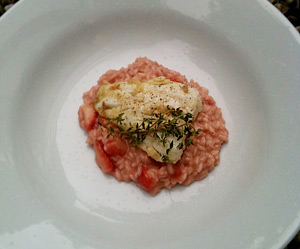

Zander auf Erdbeerrisotto
5,5 von 6500 g Erdbeeren waschen und rüsten. Die Beeren je nach Grösse vierteln oder sechsteln.
Die Schalotte oder Zwiebel schälen und fein hacken.
In einer mittleren Pfanne die Butter erhitzen. Die Schalotte oder Zwiebel darin andünsten. Dann den Reis beifügen und kurz mitrösten. Die hälfte der Erdbeeren dazugeben und kurz mitrühren, bis sie leicht musig werden. Dann den Wein beifügen und unter Rühren einkochen lassen. Nun ¹/³ der Bouillon dazugiessen und alles wieder unter Rühren vom Reis aufnehmen lassen. Erst dann den 2. Drittel Bouillon beifügen und nur noch unter gelegentlichem Umrühren wieder vom Reis absorbieren lassen. Mit dem letzten Drittel Bouillon die restlichen Erdbeeren beifügen und alles noch so lange leise kochen lassen, bis der Risotto bissfest ist; er soll in der Konsistenz sehr feucht, fast suppig sein. Dann etwas Doppelrahm und Parmesan unterrühren und den Reis mit reichlich frisch gemahlenem Pfeffer sowie wenn nötig Salz abschmecken. In einer Bratpfanne die Zanderfilets goldbraun braten und mit dem Risotto sofort servieren.
